Wadi Court Mixed-Use
Coordinate the mixed-use layers without losing the urban experience.
Residential layers, retail podium, public realm, landscape and building systems are treated as one coordinated digital ecosystem — protecting the project’s urban logic while resolving technical interfaces.
The digital model connects what the user sees with what the building needs to work.
The BIM story focuses on federation across mixed-use layers, podium interfaces, vertical coordination, public-realm edges, architectural intent and system visibility — turning a complex development into a reviewable information environment.
Wadi Court Mixed-Use
A cinematic sequence of coordinated models, digital construction thinking and project-specific BIM intelligence.
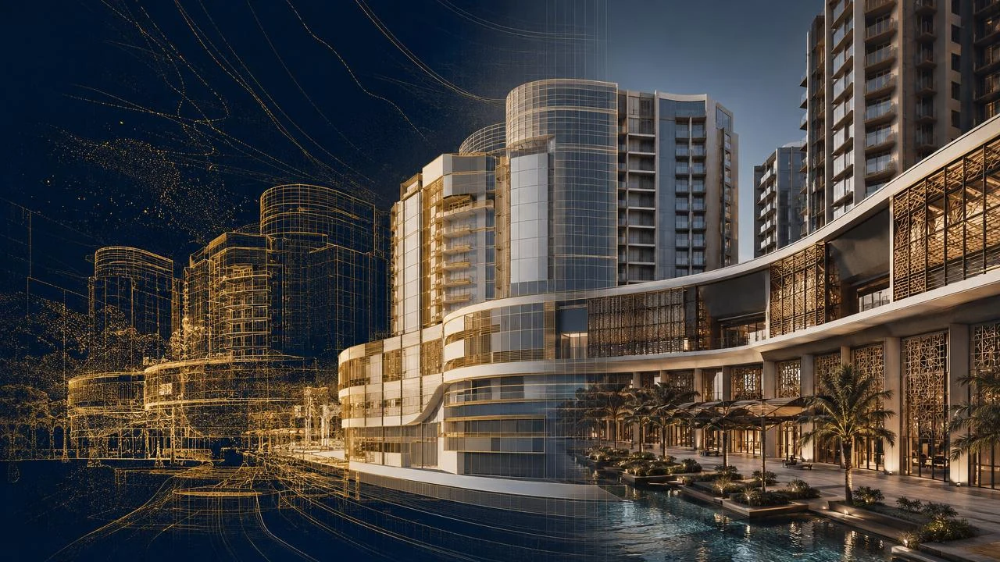
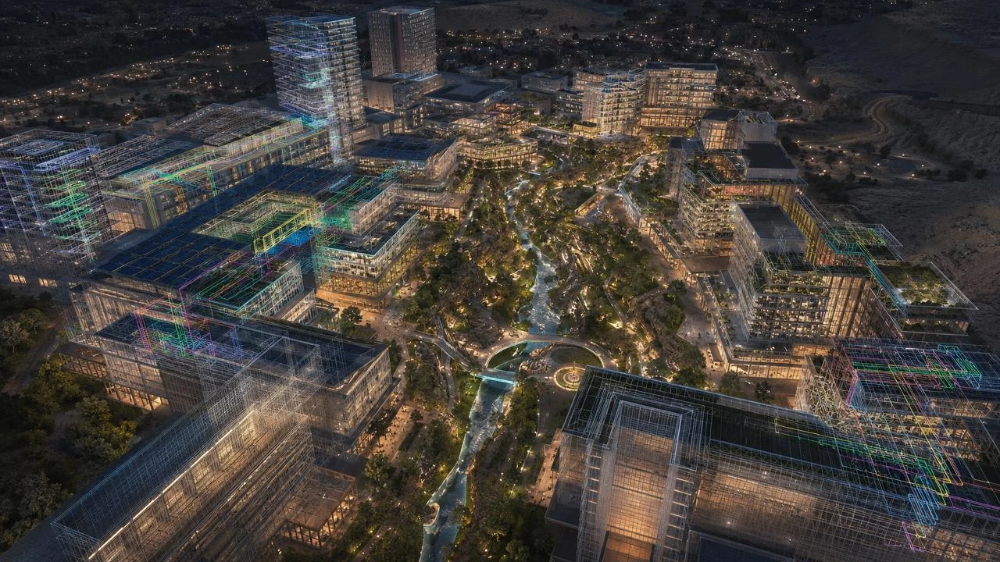
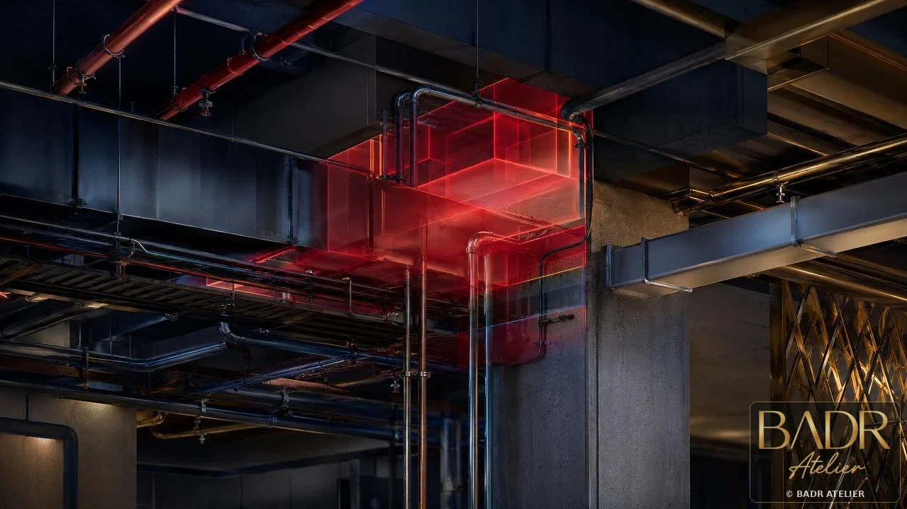
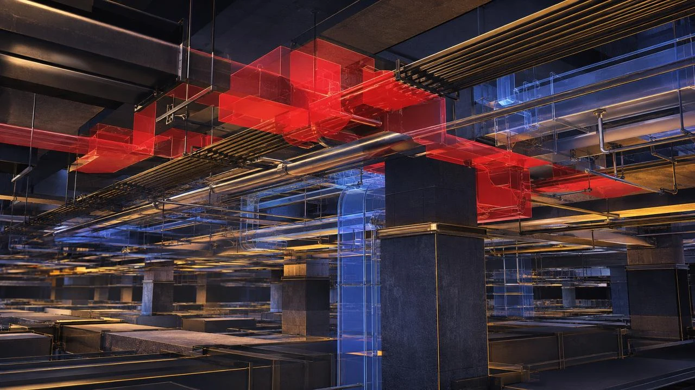
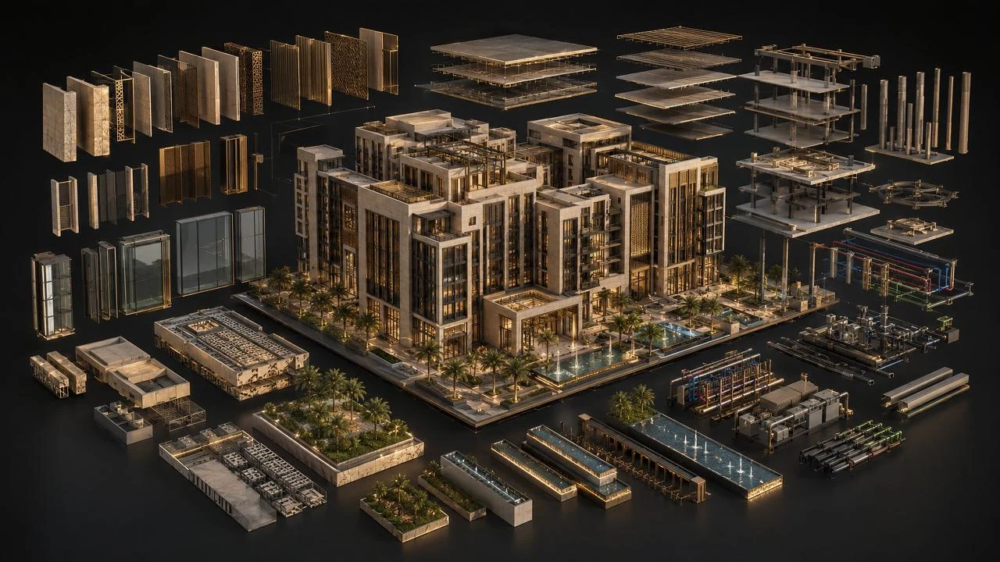
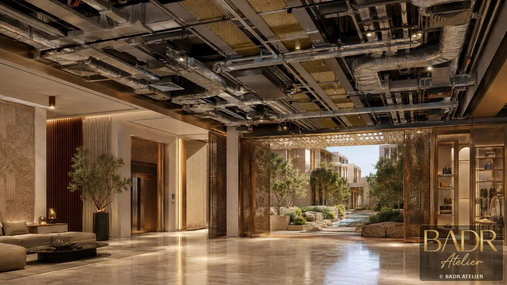
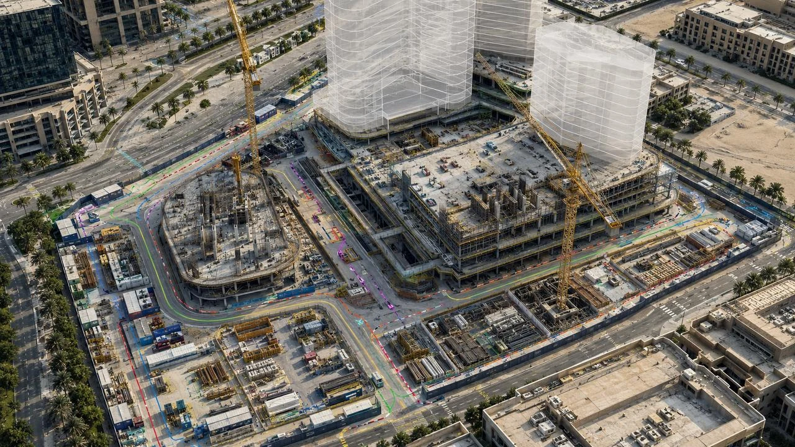
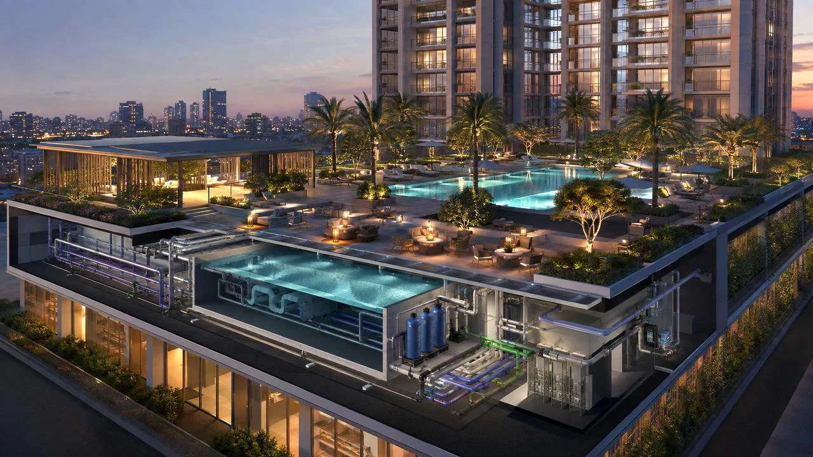
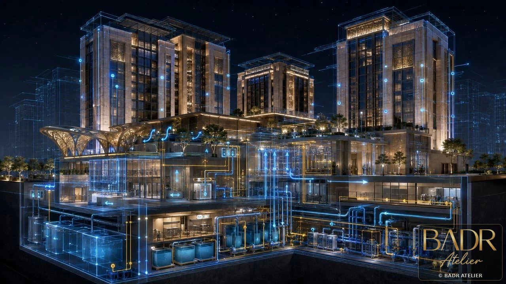
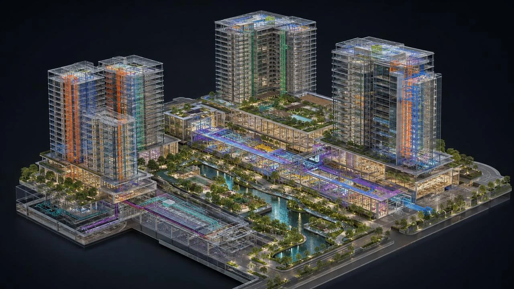
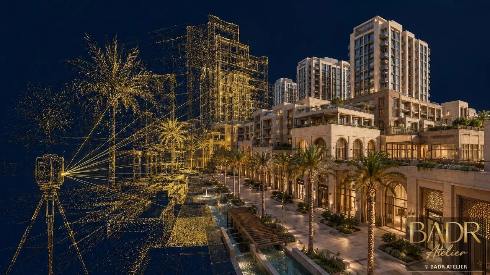
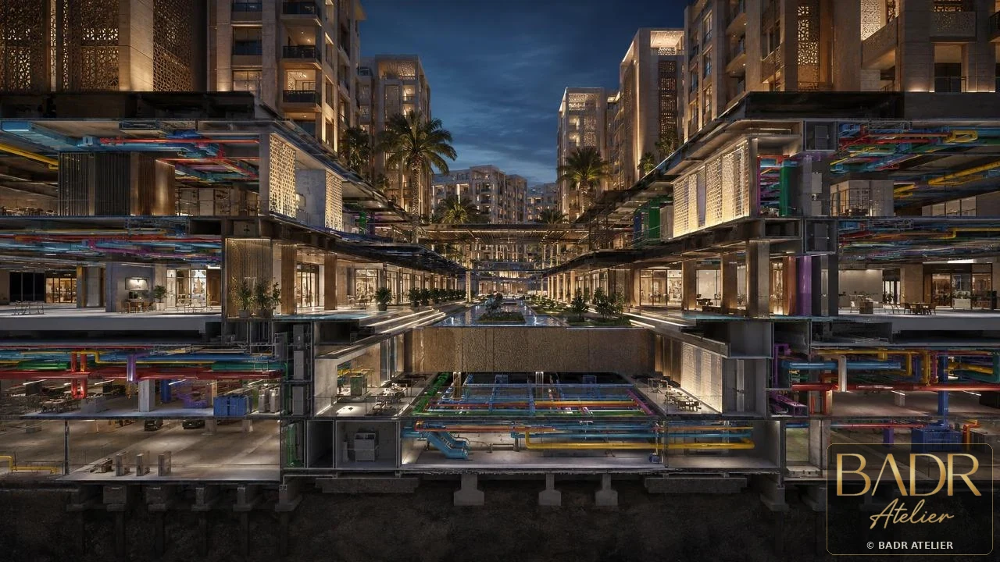
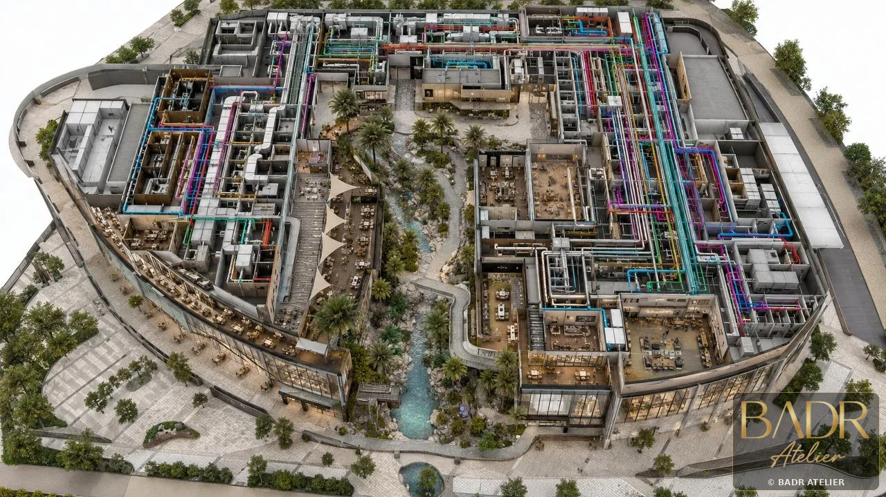
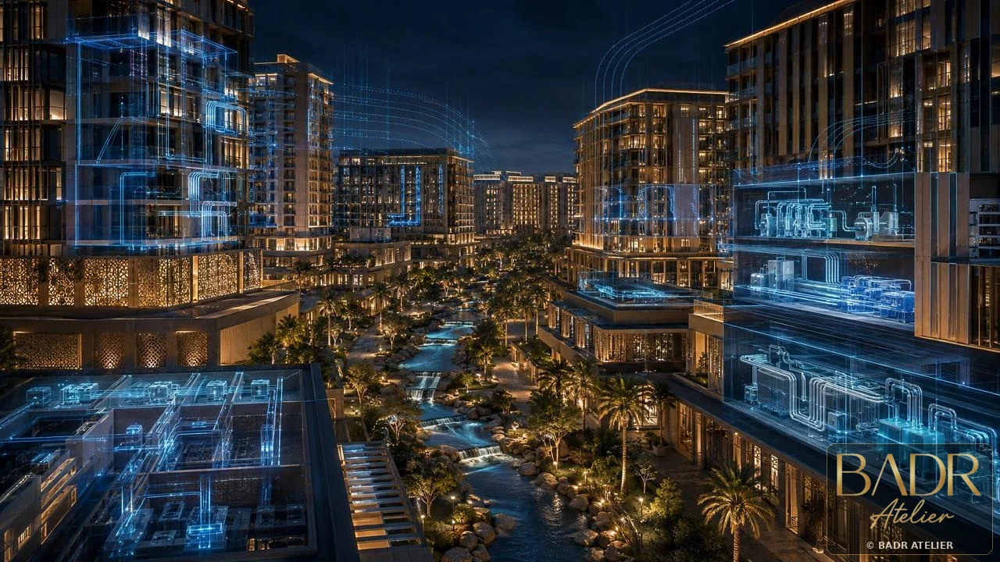
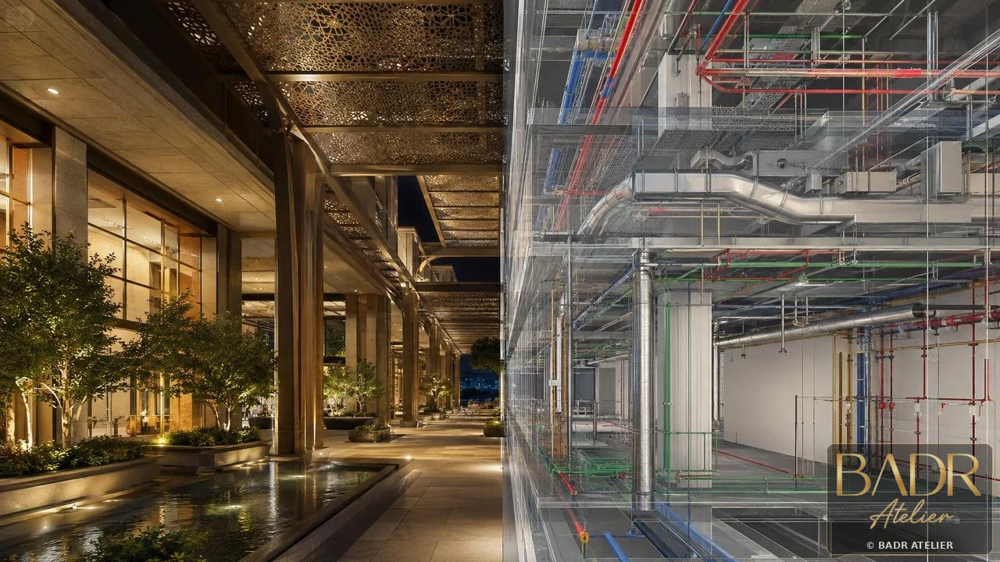
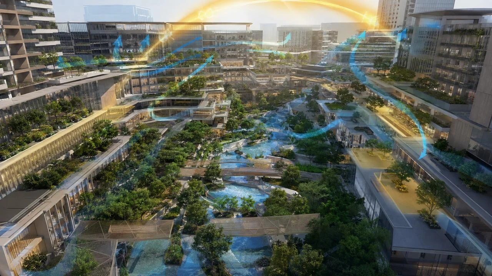